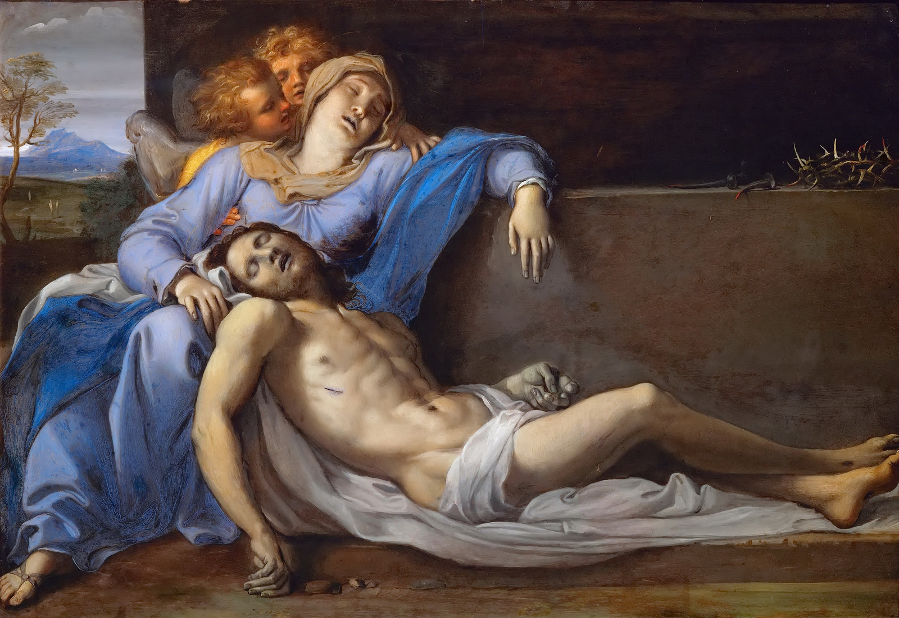
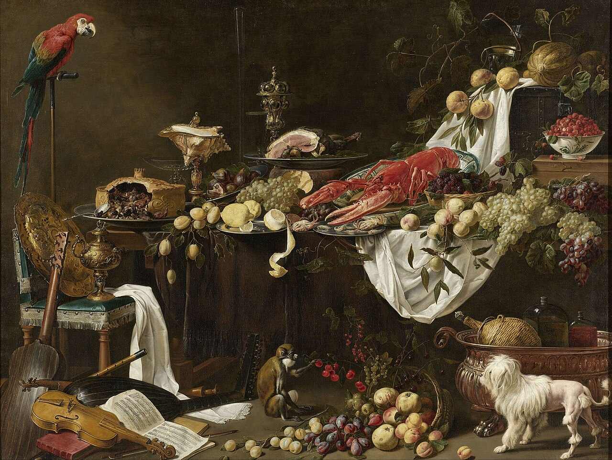
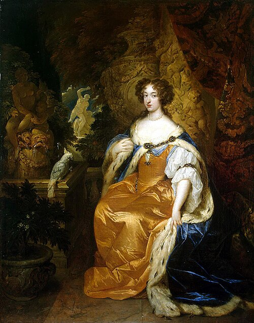

Sissejuhatus ja Ajalugu
Sissejuhatus
Barokk on äärmiselt uhke ja keerukas arhitektuuri-, kunsti- ja disainistiil, mis õitses Euroopas 17. sajandil ja 18. sajandi esimesel poolel. Itaaliast pärit stiili mõju levis kiiresti üle Euroopa ja sellest sai esimene visuaalne stiil, millel oli märkimisväärne ülemaailmne mõju. See järgnes Renessansskunstile ja Manerismi kunstile ning eelnes Rokokoole ja Neoklassitsistlikule stiilile. Katoliku kirik julgustas seda kui vahendit protestantliku arhitektuuri, kunsti ja muusika lihtsuse ja karmuse vastu võitlemiseks, kuigi luterlik Barokk-kunst arenes ka Euroopa osades.

Annibale Carracci, "Pietà"

Nicolas Poussin, "Orpheuse ja Eurydike"

Annibale Carracci, "Jõgi maastik"
Ajalugu
Barokkstiil kasutas kontrasti, liikumist, detailirohkust, sügavaid värve, et saavutada aukartust. Stiil sai alguse 17. sajandi alguses Roomas, levis seejärel kiiresti ülejäänud Itaaliasse, Prantsusmaale, Hispaaniasse ja Portugali, seejärel Austriasse, Lõuna-Saksamaale, Poolasse ja Venemaale. 1730. aastateks oli see arenenud veelgi ekstravagantsemaks stiiliks, mida nimetati rokokooks ja mis esines Prantsusmaal ja Kesk-Euroopas kuni 18. sajandi keskpaigani ja lõpuni. Hispaania ja Portugali impeeriumi aladel, sealhulgas Pürenee poolsaarel, jätkus see koos uute stiilidega kuni 19. sajandi esimese kümnendini. Barokiajastut iseloomustab eriliselt priiskav õukonnaelu. Nii kunstis kui ka ühiskonnas üritati luua midagi teistsugust, erakordset. Baroki ideaal on inimese loodud objektid, mis eristuvad loodusest ja mõjuvad võimalikult kunstlikena. Näiteks üliformaalne õukondlik kõnetamisstiil, parukad, ülepakutud tseremoniaalsus ja kastraadid. Barokset maailma on võrreldud teatriga täis näitlejaid ja muusikat.

Adriaen van Utrecht, "Banketi natüürmort"

Caspar Netscher, "Mary Stuart II"